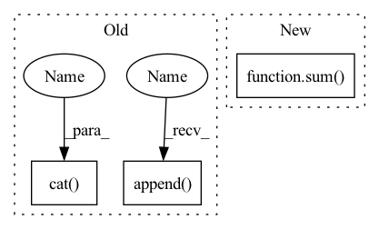

Pattern ID :1419
Before Change
_xq, _diff, _codes = vq(x - xq)
diff = diff + _diff
xq = xq + _xq
codes.append( _codes)
codes = torch.cat(codes , 1)
return xq, (x - xq).pow(2).mean(), codes
def encode(self, x):
return self.forward(x)[-1]After Change
all_losses.append(loss)
out_losses, out_indices = map(torch.stack, (all_losses, all_indices))
return quantized_out, sum( out_losses) , out_indices.permute(1, 0, 2)
def encode(self,
x: torch.Tensor,In pattern: SUPERPATTERN
Frequency: 4
Non-data size: 3
Instances Fragment ID: 4848825
Project Name: caillonantoine/rave
Commit Name: b58cba5d330c227f2122bc07fcbf7ed068eb91be
Time: 2023-01-24
Author: caillon@ircam.fr
File Name: rave/quantization.py
M Class Name: ResidualVQ
N Class Name: ResidualVectorQuantization
M Method Name: forward(3)
N Method Name: forward(2)
M Parent Class: nn.Module
N Parent Class: nn.Module
M File Name: rave/quantization.py
N File Name: rave/quantization.py
M Start Line: 106
M End Line: 116
N Start Line: 289
N End Line: 307
Before Change
or (batch_size, num_blocks*growth_rate, n_bins, n_frames)
x = input
stacked = []
stacked.append( input)
for idx in range(self.num_blocks):
if idx != 0:
x = torch.cat( stacked, dim=1)
x = self.net[idx](x)
stacked.append(x)
output = torch.cat(stacked[1:], dim=1)After Change
x_residual = x_residual + x
in_channels = growth_rate[idx]
stacked_channels = sum( growth_rate[idx+1:])
sections = [in_channels, stacked_channels]
if idx != num_blocks - 1:
x, x_residual = torch.split(x_residual, sections, dim=1) Fragment ID: 4848827
Project Name: tky823/dnn-based_source_separation
Commit Name: 8fb5cd5f4f8b4a435d058aef6204904f657abea0
Time: 2021-06-06
Author: 40362510+tky823@users.noreply.github.com
File Name: src/models/d3net.py
M Class Name: D3Block
N Class Name: D3Block
M Method Name: forward(2)
N Method Name: forward(2)
M Parent Class: nn.Module
N Parent Class: nn.Module
M File Name: src/models/d3net.py
N File Name: src/models/d3net.py
M Start Line: 357
M End Line: 367
N Start Line: 414
N End Line: 430
Before Change
or (batch_size, depth * growth_rate, n_bins, n_frames) if type(growth_rate) is int
x = input
stacked = []
output = []
stacked.append( input)
for idx in range(self.depth):
if idx != 0:
x = torch.cat( stacked, dim=1)
x = self.net[idx](x)
stacked.append(x)
output = torch.cat(stacked[1:], dim=1)After Change
x_residual = x_residual + x
in_channels = growth_rate[idx]
stacked_channels = sum( growth_rate[idx+1:])
sections = [in_channels, stacked_channels]
if idx != depth - 1:
x, x_residual = torch.split(x_residual, sections, dim=1) Fragment ID: 4848823
Project Name: tky823/dnn-based_source_separation
Commit Name: 8fb5cd5f4f8b4a435d058aef6204904f657abea0
Time: 2021-06-06
Author: 40362510+tky823@users.noreply.github.com
File Name: src/models/d2net.py
M Class Name: D2Block
N Class Name: D2Block
M Method Name: forward(2)
N Method Name: forward(2)
M Parent Class: nn.Module
N Parent Class: nn.Module
M File Name: src/models/d2net.py
N File Name: src/models/d2net.py
M Start Line: 51
M End Line: 62
N Start Line: 51
N End Line: 67
Before Change
def forward(self, x):
xq = 0
diff = 0
codes = []
for vq in self.vqs:
_xq, _diff, _codes = vq(x - xq)
diff = diff + _diff
xq = xq + _xq
codes.append( _codes)
codes = torch.cat( codes, 1)
return xq, (x - xq).pow(2).mean(), codes
def encode(self, x):
return self.forward(x)[-1]After Change
all_losses.append(loss)
out_losses, out_indices = map(torch.stack, (all_losses, all_indices))
return quantized_out, sum( out_losses) , out_indices.permute(1, 0, 2)
def encode(self,
x: torch.Tensor, Fragment ID: 4848822
Project Name: acids-ircam/rave
Commit Name: b58cba5d330c227f2122bc07fcbf7ed068eb91be
Time: 2023-01-24
Author: caillon@ircam.fr
File Name: rave/quantization.py
M Class Name: ResidualVQ
N Class Name: ResidualVectorQuantization
M Method Name: forward(3)
N Method Name: forward(2)
M Parent Class: nn.Module
N Parent Class: nn.Module
M File Name: rave/quantization.py
N File Name: rave/quantization.py
M Start Line: 106
M End Line: 116
N Start Line: 289
N End Line: 307